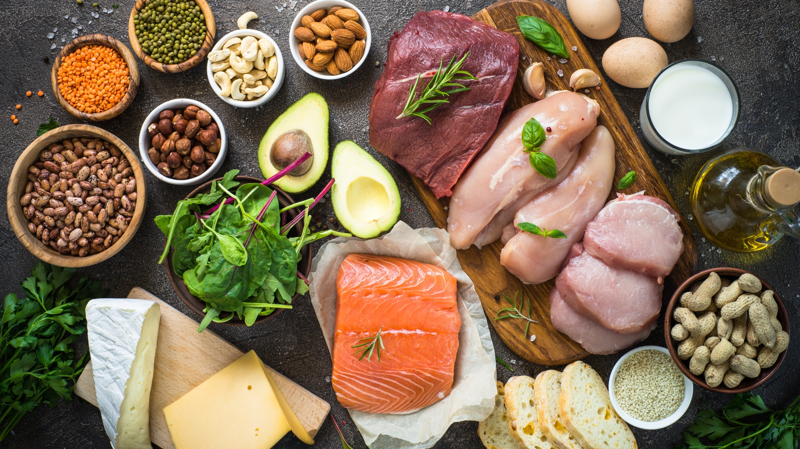
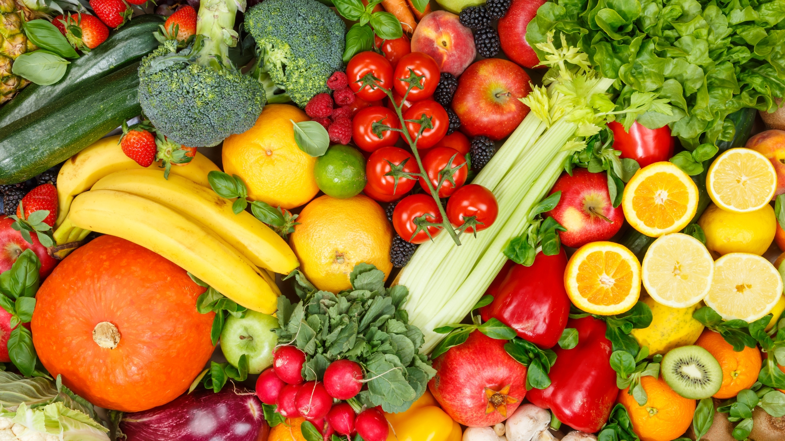
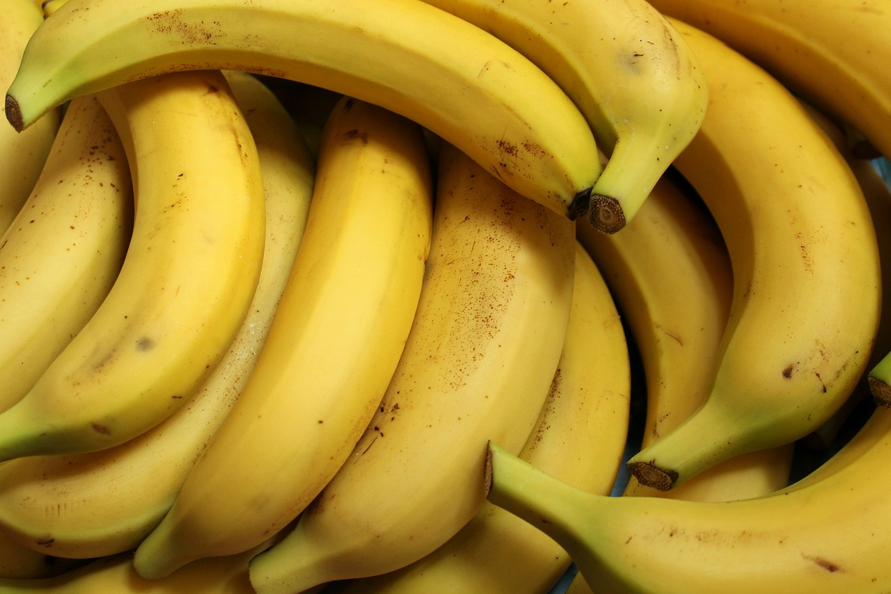
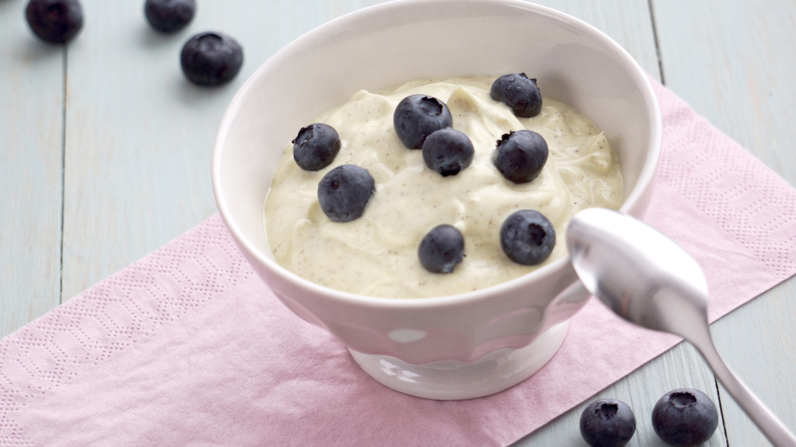
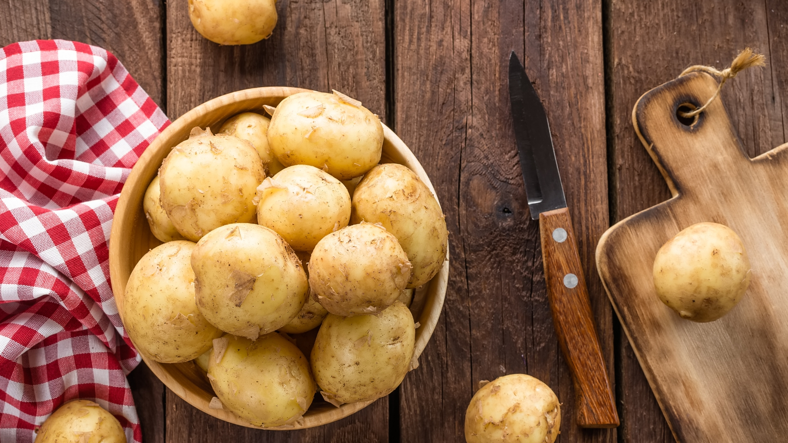

Mit gesunden Snacks Heißhungerattacken vorbeugen – das geht!
Gesunde Sattmacher sind voluminöser aber kalorienärmer. Und trotzdem halten sie lang an. Sie füllen das leere Loch im Bauch, ohne die
Gefahr eines radikalen Anstiegs des Blutzuckerspiegels und helfen damit ideal beim Abnehmen. Sie ersetzen ungesunde und oftmals
überzuckerte kalorienhaltige Snacks und üppige fetthaltige Portionen, die schwer im Magen liegen.
Das Geheimnis gesunder satt machender Lebensmittel
Nichts geht über Eiweiß! Lebensmittel, die viel Eiweiß enthalten, fordern die Energieumwandlung. Es bleibt nicht unnötig viel hängen im
Körper und es wird nicht übermäßig viel in Fettvorräten angesammelt. Einen ähnlich positiven Effekt auf die Gewichtsreduzierung haben
Ballaststoffe. Sie fördern die Verdauung und werden nicht gespeichert im Körper. Sie sind besonders kalorienarm, dehnen aber den
Magen so sehr aus, dass schnell ein Sättigungsgefühl eintritt.

Unsere Top 10 der gesunden Sattmacher:
1. Flockig und flott
Keine Frage, Haferflocken gehören zu einer gesunden Ernährung unbedingt dazu. Wer schon morgens nahrhaft und ausgewogen isst, wird
wohlgenährt und topfit durch den Tag kommen. Dabei sind Haferflocken längst mehr als nur schleimiger Brei. Es gibt sie mittlerweile in
Form von köstlich warmem Porridge in sämtlichen Geschmacksvariationen sowie als praktische Overnight Oats oder in leckeren
Müslikombinationen mit Obst und Joghurt. Haferflocken enthalten viel Eiweiß, Ballaststoffe und wertvolle Vitamine. Einfach unschlagbar,
die kleinen Kraftflocken.
2. Die magischen 5
Mindestens fünf Portionen Obst und Gemüse am Tag verteilt sollten es sein. Wer diese Faustregel beachtet, lebt gesünder und satter.
Der Trick ist: Gemüse enthält sehr wenig Kalorien und oft viel Wasser. So können Gurkensticks mit Kräuterquark zusammen als leichter und
sattmachender Snack am Abend super herhalten. Wer zu faul zum Schnippeln ist, kauft sich geschnittenes Obst, das mittlerweile in fast
allen Supermärkten und auch bei vielen Bäckern als gesunde Alternative zu Kuchen und Torten angeboten wird.

3. Es grünt so grün
Grüne Smoothies als Power-Frühstück - gesünder geht es nicht. Denn die grünen Säfte haben alles, was für eine volle Mahlzeit gebraucht
wird. Sie halten den Blutzuckerspiegel lang oben und damit das Sättigungsgefühl lang genug an. Als optimale Zutaten gelten Avocados,
Bananen, Spinat, Grünkohl und Kiwis. Diese können je nach geschmacklichen Vorlieben mit Milch, Chiasamen oder Ananassaft püriert
werden. Das Ergebnis ist ein nahrhaftes Getränk, das ewig satt macht.
4. Pasta muss kein No-Go sein!
Ein jeder kennt die unbändige Lust auf Pasta und das schlechte Gewissen danach. Denn das kohlenhydratreiche Essen haut ganz schön
rein. Jetzt kommt die gute Nachricht für alle, für die Pasta zu den Leibgerichten gehört: In der Vollkorn-Variante sind sie gesund. Denn
Vollkornnudeln machen schneller satt als herkömmliche Nudeln, halten länger an und schmecken trotzdem genauso gut. Pasta va bene!
5. Eine Banane zwischendurch geht immer
Bananen sind das ideale Obst für zwischendurch und auch für unterwegs. Sie sind extrem nährstoffreich und gelten als top
Energielieferanten. Und anders als Kaffee oder Kekse sind sie wegen Ihres Gehalts an vielen Ballaststoffen gesund und lang sättigend.
Dass Bananen auch förderlich für die Verdauung sind, ist längst kein Geheimnis mehr. Ihr Geschmack ist unvergleichlich einzigartig.

6. Geheimtipp der Stars und Sternchen
Darauf schwören Supermodels: Wer Karotten und Sellerie knabbert statt zuckerhaltige Schokoriegel zu verputzen, kann langfristig
Attacken auf Süßes vermeiden. Das lange Kauen von Karotten hilft außerdem, plötzlichen Heißhunger auf gesunde Art und Weise zu
verdrängen. Der enthaltene Ballaststoff Pektin quillt im Magen herrlich auf und das bekannte Beta-Carotin ist gut für das Sehvermögen.
Lecker sind Karotten wegen ihrer Süße allemal.
7. You got the Power
Hüttenkäse als besonders kalorienarmer und eiweißhaltiger Käse gilt ebenso wie Quark als der Sattmacher schlechthin. Besonders am
Abend eignen sich proteinreiche Nahrungsmittel zur Gewichtsreduzierung und für ein langanhaltendes Sättigungsgefühl. Wer auf Käse,
Quark und Joghurt setzt, kann ruhigen Gewissens zuschlagen und mit einem gesunden vollen Magen zu Bett gehen.

8. Früchte, die es in sich haben
Bohnen, Erbsen und Linsen lassen nicht nur is Ärschl grinsen. Sie vertreiben ungewünschte Heißhungerattacken und sind unersetzbare
Proteinlieferanten. Mittlerweile gibt es zahlreiche innovative Rezepte mit den gesunden Hülsenfrüchten, die ihren einstmals schlechten
Ruf als langweiliges Lebensmittel längst abgeschrieben haben. Gerade die mittlerweile beliebten Kichererbsen schmecken als Püree oder
als sättigende Salatbeilage unvergleichlich köstlich.
9. Auf die Plätze, knabbern, los!
Nüsse haben eine sehr hohe Energiedichte. Die kleinen Leckerlies für zwischendurch machen lang satt und haben eine positive Wirkung
auf die Konzentrationsfähigkeit. Sie geben Power und eignen sich als Naschwerkzeug deshalb besonders gut. Vorzugsweise sollten
allerdings ungesalzene und ungeröstete Nüssen für den gesunden Kick verzehrt werden, da in diesen die gesunden Fettsäuren besser
erhalten bleiben.
10. Die Super-Knolle
Entgegen weitläufiger Meinungen sind Kartoffeln keine Dickmacher, sondern vielmehr reich an kostbaren Ballaststoffen und perfekt für
alle, die ein paar Kilos abspecken wollen. Die Kartoffel gilt als ein echter Klassiker unter den gesunden Sattmachern, weil sie sehr
kalorienarm ist. Sofern sie nicht in Form von Chips, Pommes oder Gnocchis konsumiert wird, ist die Kartoffel immer eine gute Wahl.

Und damit haben Sie es: Eine Liste an Lebensmitteln, die absolut köstlich sein können und sowohl ihr Hungergefühl lange stillen, als auch
wenige Kalorien haben. Sind sie von einigen dieser Inklusionen überrascht? Wie dem auch sei, nun steht einem großen Teil ihrer
Fitnessziele nichts mehr im Wege. Denn die Ernährung macht einen von vielen nach wie vor unterschätzten Teil der eigenen Fitness aus.